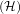
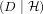
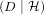
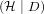
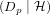
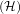
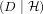
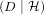
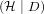
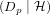

| hypothesis | prior | likelihood | Bayes numerator | posterior | posterior predictive |
| prior | flip heads twice | ||||
| P | P | PP | P | PP | |
| A | 0.5 | 0.25 | 0.125 | 0.299 | 0.150 |
| B | 0.25 | 0.36 | 0.09 | 0.216 | 0.129 |
| C | 0.25 | 0.81 | 0.2025 | 0.485 | 0.437 |
| 0.4125 | 1.0 | 0.715 | |||
We are answering questions in the material from MIT OpenCourseWare course 18.05, Introduction to Probability and Statistics.
We use documentation in to write the LATEXcode for this document.
In this document we are answering questions Orloff and Bloom ask in [1].
In this section we continue the example that Orloff and Bloom give us in [2]. They give us a coin-flipping experiment, where we flip a coin twice, and it lands on heads twice. The task Orloff and Bloom give us is to work out the posterior predictive probability of heads on the third toss.
We incorporate all the data and probabilities that Orloff and Bloom give us into a Bayesian update table and add one more column with the numbers Orloff and Bloom require for the solution to this problem.
Note: in the table below, Dp is the probability that the next data we get is heads, and it is conditioned on the hypothesis that we select a certain type of coin in the table below.
| hypothesis | prior | likelihood | Bayes numerator | posterior | posterior predictive |
| prior | flip heads twice | ||||
| P | P | PP | P | PP | |
| A | 0.5 | 0.25 | 0.125 | 0.299 | 0.150 |
| B | 0.25 | 0.36 | 0.09 | 0.216 | 0.129 |
| C | 0.25 | 0.81 | 0.2025 | 0.485 | 0.437 |
| 0.4125 | 1.0 | 0.715 | |||
The weighted sum of the product of the posterior probabilities and the probability of heads given the type of coin is the posterior predictive probability. In this case 0.715.
[1] Jeremy Orloff and Jonathan Bloom, Reading Questions 12a, Available at https://ocw.mit.edu/courses/mathematics/18-05-introduction-to-probability-and-statistics-spring-2014/readings/reading-questions-12a/ (Spring 2014)
[2] Jeremy Orloff and Jonathan Bloom, Bayesian Updating: Probabilistic Prediction Class 12, 18.05 Jeremy Orloff and Jonathan Bloom Available at https://ocw.mit.edu/courses/mathematics/18-05-introduction-to-probability-and-statistics-spring-2014/readings/MIT18˙05S14˙Reading12a.pdf (Spring 2014)